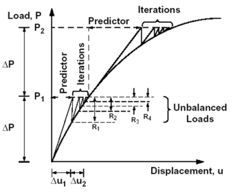

由于载荷-挠度曲线是非线性的，软件必须在迭代的基础上求解方程，收敛准则将决定何时可以接受各个载荷步的答案。
在载荷增长前，当前载荷条件必须通过收敛准则。
可以在解算方案对话框的收敛准则组(解算方案对话框→工况控制→非线性参数→收敛准则)中设置 NLSTATIC 106解算方案的收敛准则
可以在解算方案对话框的平衡选项卡(解算方案对话框→工况控制→策略参数→平衡)中设置 SOL 601，106解算方案的收敛准则
如果载荷步收敛失败，将增量拆分为更小的步可以帮助解算继续进行。
